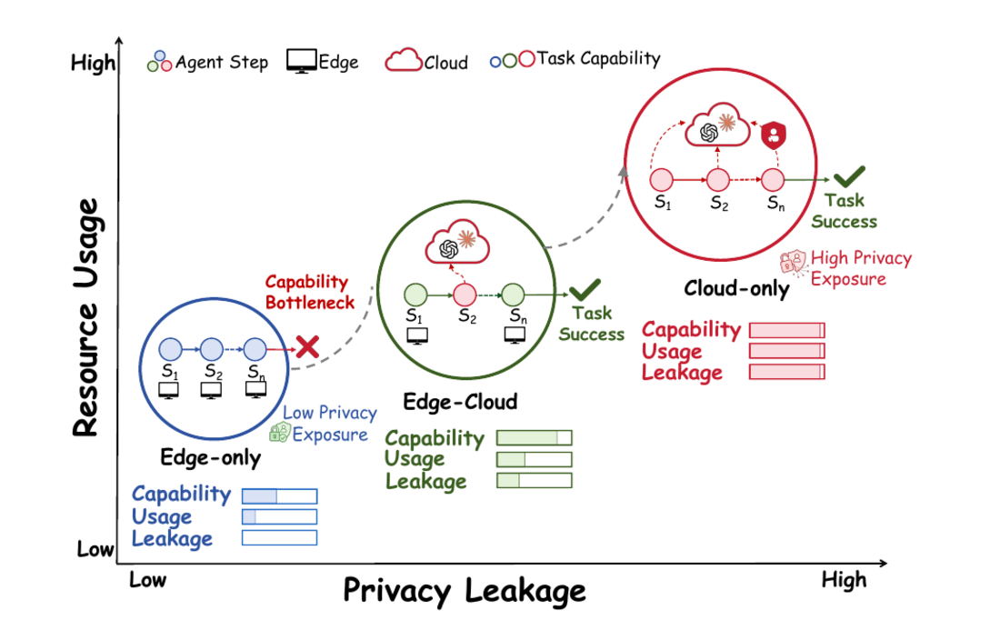
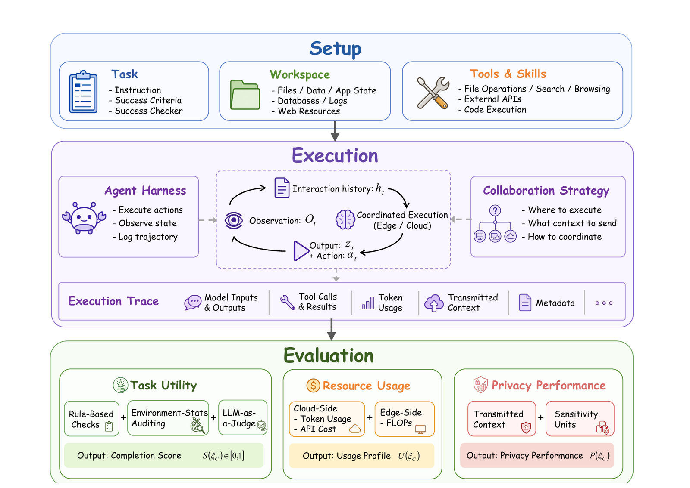

No single side wins
Cloud-only agents are capable but leak heavily (privacy ≈ 22%). Edge-only agents are perfectly private but stall on hard, long-horizon workspace tasks.
Benchmark & Analysis · 2026
* Corresponding authors
LLM agents now act inside private local workspaces — files, databases, terminals, and app state. Running everything on-device protects that data but caps capability; sending everything to the cloud is capable but leaks context. The real question is how edge and cloud should collaborate — and ACE-BENCH is the first benchmark to measure that choice across task utility, resource cost, and privacy at once.

Cloud-only agents are capable but leak heavily (privacy ≈ 22%). Edge-only agents are perfectly private but stall on hard, long-horizon workspace tasks.
Edge-cloud strategies strike a better balance — it depends on when the cloud is called and what context is sent. The best setup nears cloud utility at ~1/10 the cost, far more private.
Stronger on-device models need the cloud less. The best pattern shifts from step-level fallback toward task routing & planning — at a fraction of the cost ($3 vs $35).
Even sparing cloud use can still expose sensitive local context. Future agents must optimize model-use and context-sharing decisions jointly.
| # | Method | Completion ↑ | Pass3 ↑ | Privacy ↑ | Cloud Cost ↓ |
|---|
Each method lists its edge / cloud models, cloud tokens (raw / cache-read / output, millions), and edge FLOPs (PetaFLOPs). Privacy is computed on the 100 privacy-annotated tasks; higher is better on every arrow shown.
Today's strongest agents lean on cloud-hosted frontier models. But an agent interacting with a local workspace accumulates context — file contents, tool outputs, evolving application state — and every cloud invocation can ship a slice of it off-device. That makes cloud execution a real privacy channel, while on-device execution trades that risk for weaker capability.
All steps run on a small local model. Nothing leaves the device — but capability-intensive, long-horizon tasks expose a hard bottleneck.
A frontier model drives every step. Utility is high, yet accumulated local context is repeatedly transmitted — the highest privacy exposure and cost.
Prior work evaluated edge-cloud collaboration on static, non-agentic tasks — math, QA, dialogue — and missed how cloud calls along a trajectory expose evolving local context.
Agentic Cloud-Edge Collaboration Benchmark. 128 executable, real-world digital tasks grounded in live workspaces, with task-specific verifiers. 100 of them carry fine-grained privacy annotations, so every cloud invocation can be audited for the sensitive context it exposes.

Does the agent actually finish the job? A completion score and Passn, combining rule-based checks, environment-state auditing, and LLM-as-a-judge.
What does it cost? Cloud tokens (raw / cache-read / output), estimated monetary cost, and edge-side FLOPs — reported as a profile, never collapsed into one scalar.
What leaks? A risk-weighted non-leakage score over annotated sensitivity units — personal and organizational secrets (12 subcategories) — checked against everything visible to the cloud.
Two single-side baselines plus four representative collaboration patterns. They differ in one decisive dimension: when does the cloud participate — fixed before the task starts, or decided on the fly as the trajectory unfolds.
Every step runs locally. No cloud exposure; capability bounded by the on-device model.
Every step runs in the cloud. The capability reference point — and the privacy/cost ceiling.
The cloud writes an upfront plan; the edge model then executes the whole trajectory alone.
A one-time router assigns the entire task to either the edge or the cloud before it begins.
The edge runs each step but escalates uncertain ones to the cloud as they arise.
The edge stays in control and pulls cloud plans, hints, or recovery only when it asks for help.
Plotting every strategy in the same utility–cost–privacy space exposes trade-offs a single success rate would hide. Read each point as one strategy: right = more cloud cost, up = higher completion, and the number inside = privacy.
Cloud-only tops utility but drops below 25% privacy; edge-only keeps 100% privacy but loses more than 10 points of completion. Each extreme sacrifices an axis.
Edge-cloud strategies achieve a substantially better balance by invoking the cloud only when needed. But the gain depends on which pattern: how cloud use and context transmission are arranged.
With a capable edge model, the preferred recipe shifts from step-level fallback toward task routing, planning, and recovery guidance — keeping utility while cutting cost and exposure (Adaptive Assist.: $3.07 vs cloud-only's $34.69).
Dashed contours group strategies sharing the same edge backbone. Hover any point for its exact numbers. The takeaway: future edge-cloud agents should treat cloud invocation as a joint model-use and context-sharing decision — not a simple quality–cost trade-off.
Tasks, executable workspaces, verifiers, and every collaboration strategy implementation.
github.com/OpenBMB/AceBenchFormalization, task construction, privacy annotation protocol, and complete analysis.
Read the PDF@misc{huang2026acebench,
title = {Empowering Edge Agents: A Systematic
Analysis of Edge-Cloud Collaboration
in LLM Agent Execution},
author = {Huang, Pengcheng and Liu, Zhenghao and
Xiao, Chaojun and Yan, Yukun and Yu, Shi
and Yao, Sijia and Gu, Yu and Yu, Ge and
Sun, Maosong},
year = {2026},
url = {https://github.com/OpenBMB/AceBench}
}